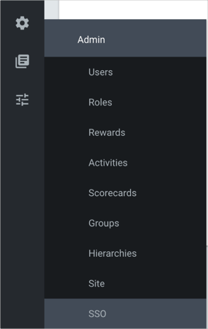
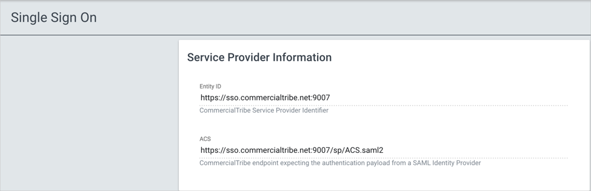
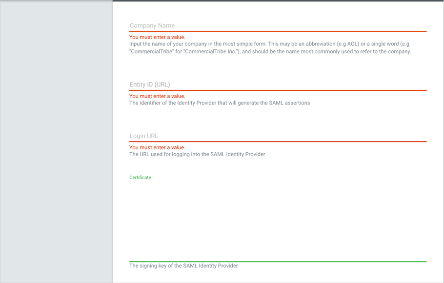

Login to Commercial Tribe as an administrator.
Navigate to Settings > SSO:

Check the Enable SAML Authentication button:
Click the Settings tab to display the Single Sign-On screen:

Copy and paste the following into the Entity ID and ACS fields:
Sign into the Okta Admin Dashboard to generate this variable.
Enter the following information (see screen shot at end of step for reference):
Company Name: Enter your company name.
Entity ID (URL): Copy and paste the following:
Sign into the Okta Admin Dashboard to generate this variable.
Login URL: Copy and paste the following:
Sign into the Okta Admin Dashboard to generate this variable.
Click Certificate and copy and paste the following x.509 Certificate:
Sign into the Okta Admin Dashboard to generate this variable.

Click Update.
Done!
Notes:
SP-initiated flows, IDP-initiated flows, and Just In Time (JIT) provisioning are all supported.